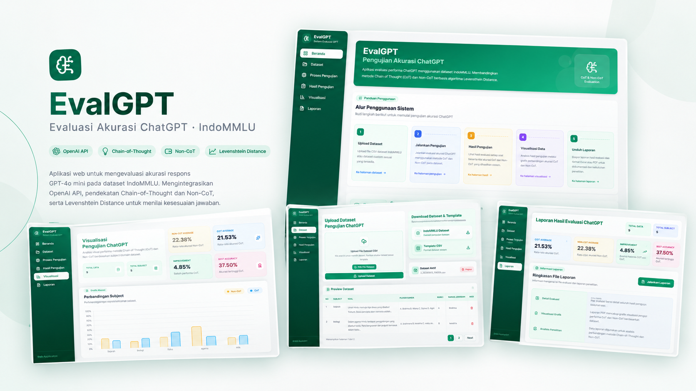
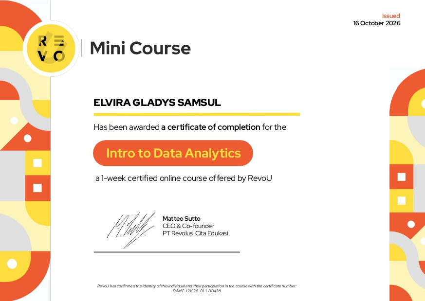
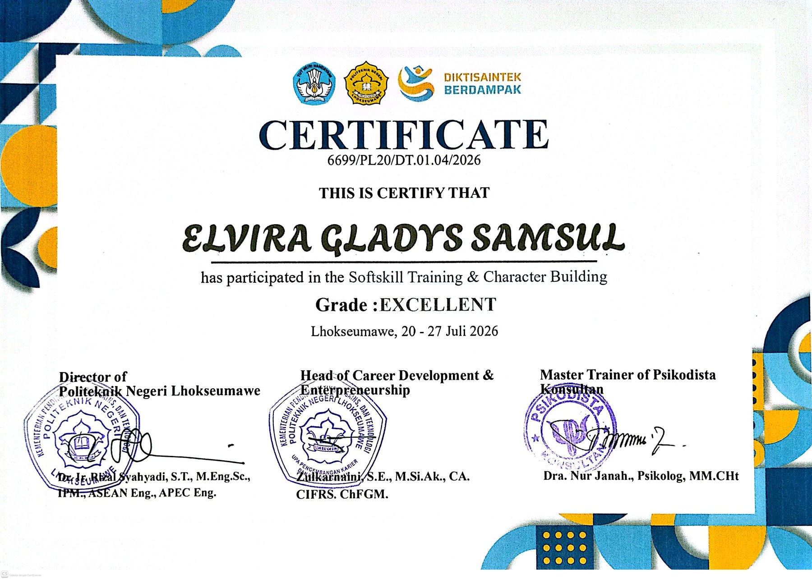
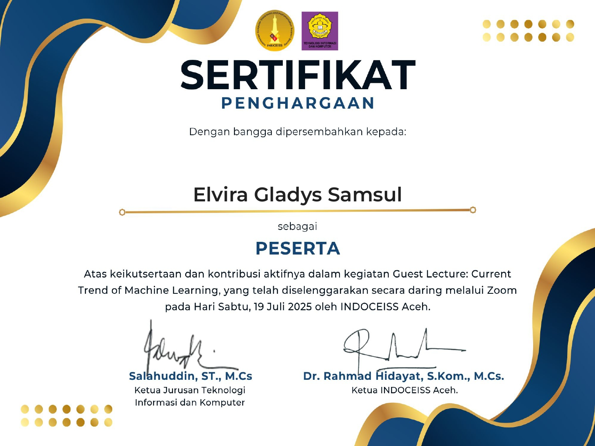
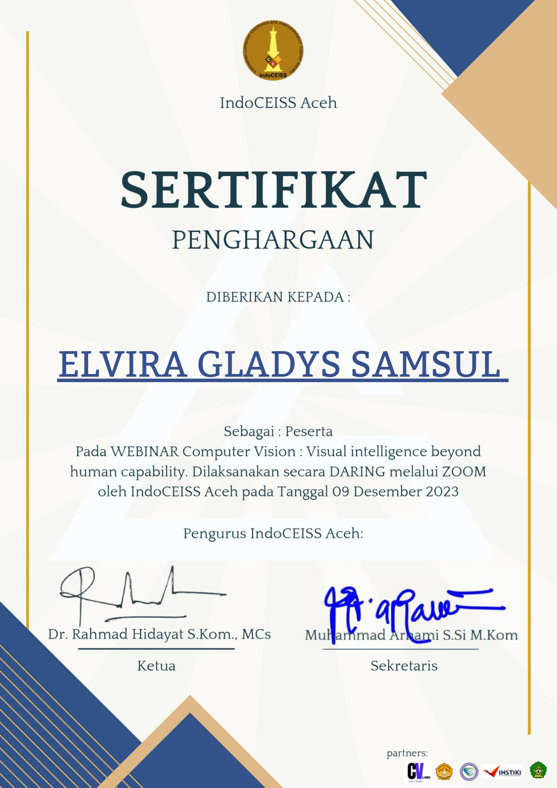
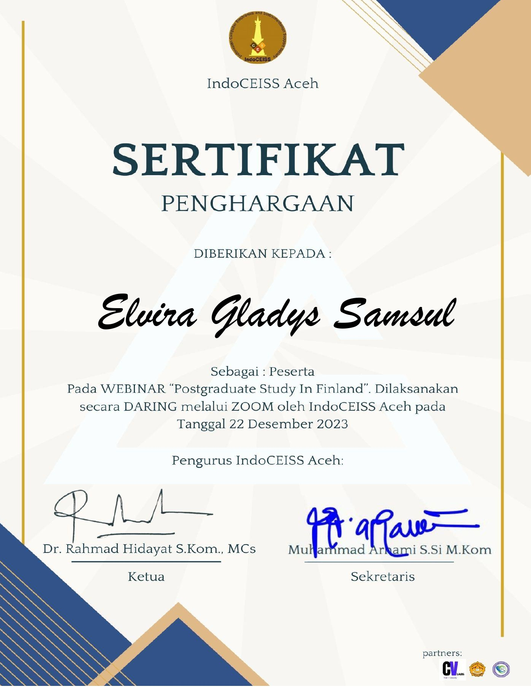
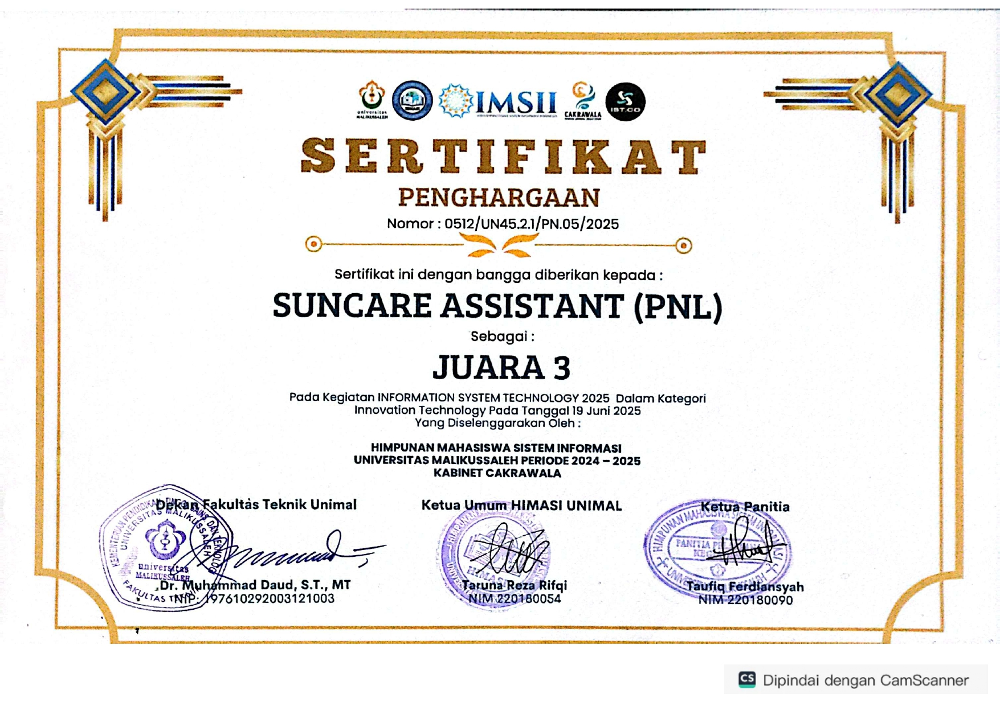
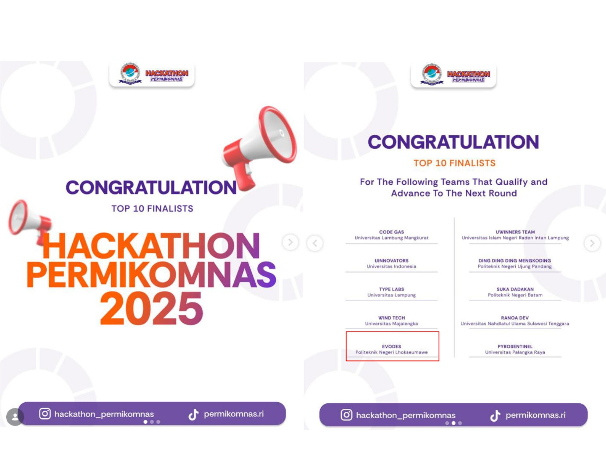
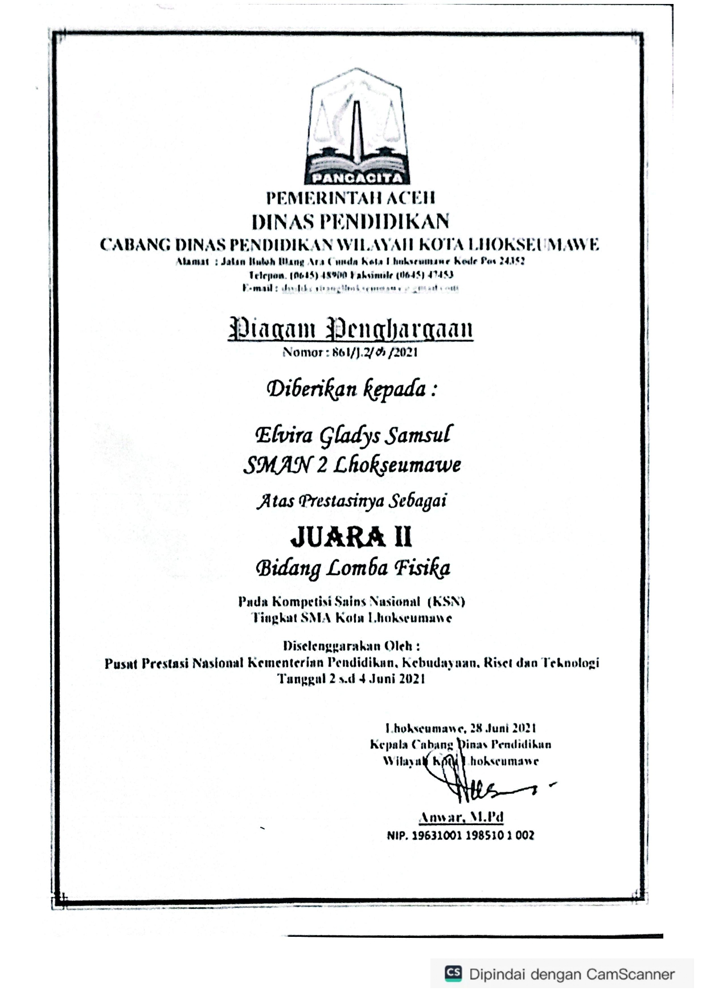

Web Developer · Quality Assurance · Administrasi & Operasional
Fresh graduate D4 Teknik Informatika Politeknik Negeri Lhokseumawe dengan IPK 3,93. Berpengalaman di bidang administrasi dokumen, pengolahan data, pelaporan, serta pembangunan aplikasi web berbasis Laravel dan quality assurance untuk memastikan produk berjalan sesuai kebutuhan.
Membangun solusi digital yang rapi, teruji, dan mudah digunakan.
Saya menikmati proses mengubah kebutuhan menjadi produk yang jelas alurnya—mulai dari riset, perancangan, implementasi, hingga pengujian.
Profil singkat
Elvira Gladys Samsul
Lulusan D4 Teknik Informatika Politeknik Negeri Lhokseumawe yang tertarik pada pengembangan perangkat lunak, web development, dan software testing. Terbiasa bekerja dari analisis kebutuhan, perancangan sistem dan database, implementasi, hingga pengujian dengan perhatian pada detail dan pengalaman pengguna.
Selama magang di PT Telkom Akses, saya menjalankan peran Personal Assistant Head of Service Area yang berfokus pada administrasi dokumen, pengolahan data, pelaporan, serta pengembangan aplikasi pengelolaan material lapangan berbasis Laravel. Pengalaman ini melatih saya untuk bekerja terorganisir, berkomunikasi lintas fungsi, dan menyelesaikan masalah secara sistematis.
TelitiSistematisKolaboratifAdaptif
Capaian akademik
Politeknik Negeri LhokseumaweD4 Teknik Informatika
IPK3.93 / 4.00
SMA Negeri 2 LhokseumaweIPA
Rata-rata92.8
Fokus saat ini
01 Web Development
02 Quality Assurance
03 UI/UX Design
04 Administrasi & Operasional
Lokasi
Lhokseumawe, Aceh
Indonesia · Waktu Indonesia Barat
Bahasa
Bahasa IndonesiaNative
Bahasa InggrisTOEFL 500
02 Pengalaman
Belajar langsung dari dunia kerja.
Pengalaman industri, organisasi, dan kepemimpinan yang membentuk cara saya bekerja dan berkolaborasi.
Agustus – Desember 2025Lhokseumawe, Aceh
Personal Assistant to Head of Service Area
PT Telkom Akses Lhokseumawe · Magang Industri
Mendukung kegiatan administrasi dan operasional unit Head of Service Area, mulai dari pengelolaan dokumen layanan (SPH/SPK/SLA), validasi dan pengolahan data, pelaporan, hingga pengembangan aplikasi pengelolaan material lapangan berbasis Laravel.
Menyusun, merevisi, mengarsipkan, dan menindaklanjuti dokumen layanan seperti SPH, SPK, berita acara, dan SLA.
Mengelola dan memvalidasi data operasional, merekap barcode material, memantau tiket SQM, serta menyusun laporan progres tim lapangan.
Mengembangkan aplikasi pengelolaan material lapangan dari perancangan ERD/DFD, UI/UX, implementasi, hingga pengujian.
AdministrasiData ProcessingLaravelDokumentasi
Agustus – September 2025Lhokseumawe, Aceh
Quality Assurance
Badan Karantina Indonesia · Proyek e-LaPer Dinas
Melakukan quality assurance pada aplikasi web e-LaPer Dinas untuk memastikan fitur berjalan sesuai kebutuhan pengguna dan bebas dari bug fungsional.
Menyusun dan menjalankan skenario functional testing serta black-box testing.
Mengidentifikasi, mendokumentasikan, dan melaporkan bug/error kepada tim pengembang.
Melakukan retesting setelah perbaikan dan berkoordinasi mengenai hasil pengujian.
Functional TestingBlack-box TestingBug Reporting
Organisasi & Kepemimpinan
2023 – SekarangPoliteknik Negeri Lhokseumawe
Divisi Competition & Achievement
KOMIT PNL
Mendata dan mempublikasikan prestasi mahasiswa, berkoordinasi dengan peserta lomba dan pihak kampus, serta membuat konten kreatif untuk media promosi KOMIT.
Content CreationCoordinationDocumentation
2020 – 2022SMA Negeri 2 Lhokseumawe
Bendahara
OSIS SMA Negeri 2 Lhokseumawe
Mengelola dana kegiatan OSIS dan menyusun laporan keuangan secara transparan, serta terlibat dalam perencanaan kegiatan sekolah dan bakti sosial.
FinanceEvent PlanningTeamwork
03 Proyek
Dari ide menjadi produk digital.
Delapan proyek akademik dan profesional yang mencakup pengembangan web, pengujian perangkat lunak, desain UI/UX, dan pengelolaan database.

Web App
Februari – Juli 2026 · Tugas Akhir
EvalGPT
Full-Stack Developer
Aplikasi web untuk mengevaluasi akurasi respons GPT-4o mini pada dataset IndoMMLU. Mengintegrasikan OpenAI API, pendekatan Chain-of-Thought dan Non-CoT, serta Levenshtein Distance untuk menilai kesesuaian jawaban.
Aplikasi berbasis web untuk mengelola material masuk, distribusi ke tim lapangan, pemakaian berdasarkan Work Order, pengembalian sisa, serta pencatatan material rusak atau hilang.
Pengujian aplikasi web e-LaPer Dinas melalui functional dan black-box testing, penyusunan skenario pengujian, dokumentasi bug, retesting, serta koordinasi hasil pengujian dengan tim pengembang.
Merancang UI/UX aplikasi laundry berbasis mobile menggunakan Figma, mencakup desain antarmuka, alur penggunaan, notifikasi layanan, dan pelacakan status pesanan.
Website layanan servis komputer dan HP dengan informasi layanan, pelacakan status perbaikan, estimasi biaya, dan laporan servis untuk memudahkan pelanggan memantau progres.
Website pemesanan untuk kafe dengan katalog menu, estimasi biaya, serta notifikasi status pesanan secara real-time untuk meningkatkan pengalaman pelanggan.
Membangun database akademik dengan MySQL untuk entitas mahasiswa, dosen, jurusan, dan nilai. Struktur dirancang dengan prinsip normalisasi untuk menjaga integritas data dan efisiensi query.
Merancang sistem inventaris menggunakan Microsoft Access dengan relasi antar tabel, form input/output, dan laporan stok untuk memudahkan pengelolaan serta pelacakan ketersediaan barang.
Pengalaman berkompetisi yang melatih kemampuan riset, presentasi, kolaborasi, dan pemecahan masalah.
03
Juara 3 · Juni 2025
SunCare Assistant
Information System Technology Competition (IST.CO) · Universitas Malikussaleh
Platform perlindungan kulit berbasis AI yang menganalisis data cuaca
dan indeks UV secara real-time untuk memberikan rekomendasi personal
melalui WhatsApp.
Finalis
Finalis Hackathon · Mei 2025
EVODES
PERMIKOMNAS 2025 · UIN Alauddin Makassar
Ide e-voting kepala desa berbasis web dengan antrean digital,
verifikasi QR Code, pemantauan hasil suara real-time, dan notifikasi
WhatsApp untuk digitalisasi demokrasi desa.
02
Juara 2 · Juni 2021
KSN Bidang Fisika
Kompetisi Sains Nasional · Pusat Prestasi Nasional, Kemendikbud
Meraih Juara 2 Kompetisi Sains Nasional bidang Fisika tingkat Kota
Lhokseumawe melalui kompetisi pada bidang ilmu Fisika.
05 Sertifikat
Dokumentasi proses belajar.
Pelatihan, webinar, dan penghargaan yang mendukung pengembangan kemampuan teknis serta soft skill saya.

Pelatihan
Oktober 2026
Intro to Data Analytics
Pelatihan pengantar analisis data untuk memahami dasar
pengolahan, analisis, dan interpretasi data dalam mendukung
pengambilan keputusan.
Lihat sertifikat ↗

Pelatihan
Juli 2026
Softskill Training & Character Building
Pelatihan pengembangan karakter dan keterampilan interpersonal
untuk meningkatkan komunikasi, kedisiplinan, tanggung jawab,
dan kesiapan menghadapi dunia kerja.
Lihat sertifikat ↗

Seminar
Juli 2025
Current Trend of Machine Learning
Guest lecture mengenai perkembangan machine learning dan
penerapannya dalam teknologi serta pengembangan solusi berbasis data.
Lihat sertifikat ↗

Seminar
Desember 2023
Computer Vision: Visual Intelligence
Kegiatan akademik yang membahas computer vision dan pemanfaatan
kecerdasan buatan untuk mengenali serta menganalisis informasi visual.
Lihat sertifikat ↗

Partisipasi
22 Desember 2023
Postgraduate Study in Finland
Sertifikat partisipasi dalam kegiatan yang berkaitan dengan
studi pascasarjana di Finlandia dan informasi peluang pendidikan lanjut.
Lihat sertifikat ↗

Penghargaan
Juni 2025
SunCare Assistant — Juara 3
Meraih Juara 3 melalui proyek SunCare Assistant dalam kompetisi
IST.CO. Pencapaian ini menjadi bagian dari pengalaman dalam
mengembangkan solusi teknologi.
Lihat sertifikat ↗

Penghargaan
Mei 2025
EVODES — Finalis Hackathon
Terpilih sebagai finalis Hackathon PERMIKOMNAS 2025 melalui
proyek EVODES, dengan pengalaman dalam pengembangan ide dan
solusi berbasis teknologi.
Lihat sertifikat ↗

Penghargaan
Juni 2021
KSN Fisika — Juara 2
Meraih Juara 2 Kompetisi Sains Nasional bidang Fisika tingkat
Kota Lhokseumawe, sebagai pencapaian dalam bidang akademik
dan pemecahan masalah ilmiah.
Lihat sertifikat ↗
06 Keahlian
Peralatan untuk membangun dan menguji.
Kombinasi kemampuan teknis dan soft skill yang saya gunakan dalam proyek maupun kerja tim.
Web Development
Membangun aplikasi web dari perancangan database, tampilan, hingga fitur backend.
LaravelPHPHTMLCSSJavaScriptLaravel Breeze
Quality Assurance
Memastikan fitur berjalan sesuai kebutuhan melalui pengujian yang terstruktur.
Merancang antarmuka dan menggunakan tools pendukung untuk pengembangan serta dokumentasi.
FigmaBalsamiqDraw.ioVS CodeGitHubMicrosoft Office
07 Kontak
Punya peluang atau proyek? Mari terhubung.
Saya terbuka untuk peluang sebagai Web Developer, Quality Assurance, UI/UX Designer, maupun Administrasi & Operasional. Silakan hubungi saya melalui email, WhatsApp, atau formulir di bawah.